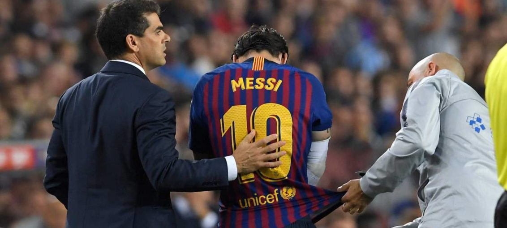

Posted at Date: February 04, 2019
Credit : রাইট স্পোর্টস ওয়েব ডেস্ক
অধিনায়ক মেসি নেই এল ক্লাসিকোয়?

কোপা দেল রে সেমিফাইনালের প্রথম পর্বে বুধ-রাতে বার্সেলোনার সামনে রেয়াল মাদ্রিদ। নিজেদের মাঠে কি খেলতে পারবেন বার্সেলোনার অধিনায়ক লিওনেল মেসি? প্রথম সেমিফাইনালে মেসির খেলা নিয়ে সংশয়ের কারণ চোট। ভালেন্সিয়ার বিরুদ্ধে খেলার দিন চোট পেয়েছিলেন উরুর পেশিতে। খেলার মাঝেই মাঠের বাইরে বসে থাকতে হয়েছিল, চিকিৎসকরা পরীক্ষা করছিলেন। যদিও মাঠে ফিরে এসেছিলেন এবং শেষ পর্যন্তই ছিলেন, ম্যাচের পর কোচ এর্নেস্তো ভালভের্দে স্বীকার করেছিলেন, মেসির চোট কতটা গুরুত্বপূর্ণ, পরীক্ষা করে দেখা হবে পরের দিন।
কাম্প ন্যু-র খবর, সোমবার অনুশীলনে দেখা যায়নি মেসিকে। হাতে আরও একটি দিন পাচ্ছেন ভালভের্দে। বিশেষজ্ঞরা মনে করছেন, ফেব্রুয়ারি মাসে যেহেতু বহু গুরুত্বপূর্ণ ম্যাচ খেলতে হবে বার্সেলোনাকে, ঝুঁকি নেবেন না কোচ। তেমন হলে মেসিকে বিশ্রামই দেওয়া হবে। লা লিগা দৌড়ে এগিয়ে থাকলেও খুব পেছনে নেই আতলেতিকো মাদ্রিদ এবং রেয়াল মাদ্রিদ। আগামী দিন কুড়ির মধ্যে তিনবার খেলতে হবে রেয়ালের সঙ্গে। তা ছাড়াও, চ্যাম্পিয়নস লিগের প্রথম নকআউট পর্ব শুরু এই মাসেই। তাই মেসিকে নিয়ে বাড়তি সতর্ক বার্সেলোনা। কোচের কাছে একটাই সুখবর, ফরাসি আউসমান দেমবেলে ফিরেছেন সুস্থ হয়ে। অনুশীলনে ছিলেন সোমবার। গত চারটি ম্যাচ তিনি খেলতে পারেননি গোড়ালিতে চোটের কারণে। ঠিক সময়েই অবশ্য মাঠে ফিরলেন। মেসি যদি না খেলতে পারেন, বুধবার রাতে নিজের দ্বিতীয় এল ক্লাসিকো খেলতে নামতে পারেন দেমবেলে। প্রথম এগারয় যদি না-ও থাকেন, এল ক্লাসিকো-য় সবচেয়ে বেশি গোলের মালিক মেসি বুধ-রাতে রিজার্ভ বেঞ্চে থাকবেন অবশ্যই।
Top Stories

Calcutta Sports Journalists' Club requests the pleasure of your company at its annual awards functionMore...

Jasprit Bumrah has been declared fit and he will now be available for selection for India's third Test against England at Trent Bridge. More...

Ronaldo has increased Juventus' standing among Europe's elite. More...